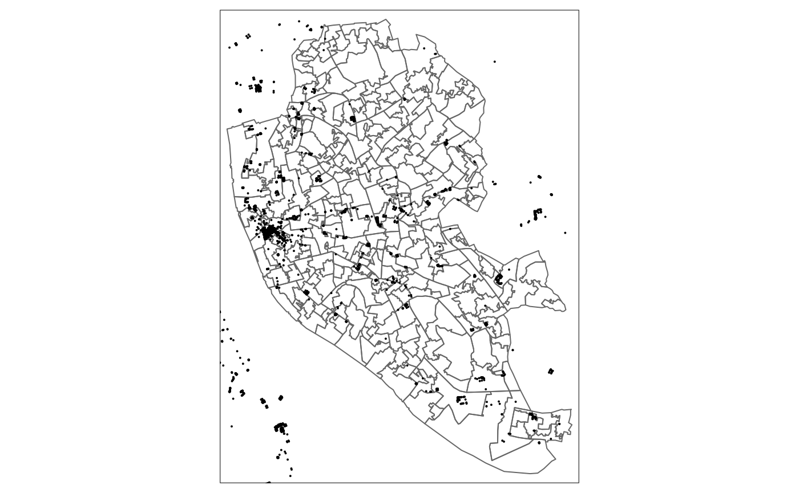
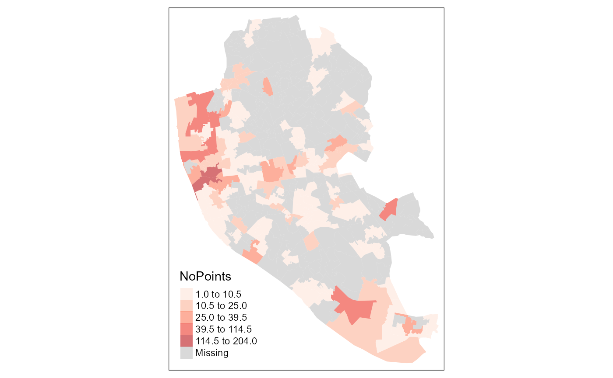
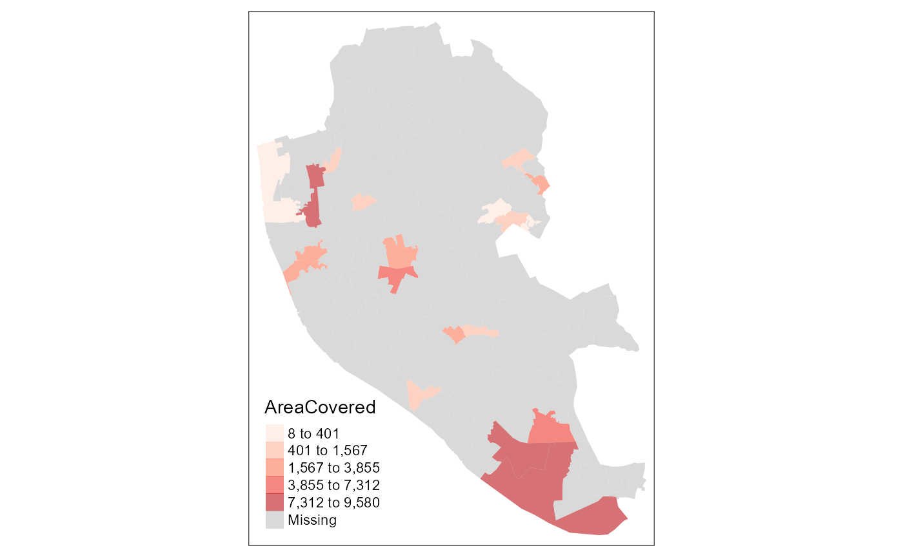
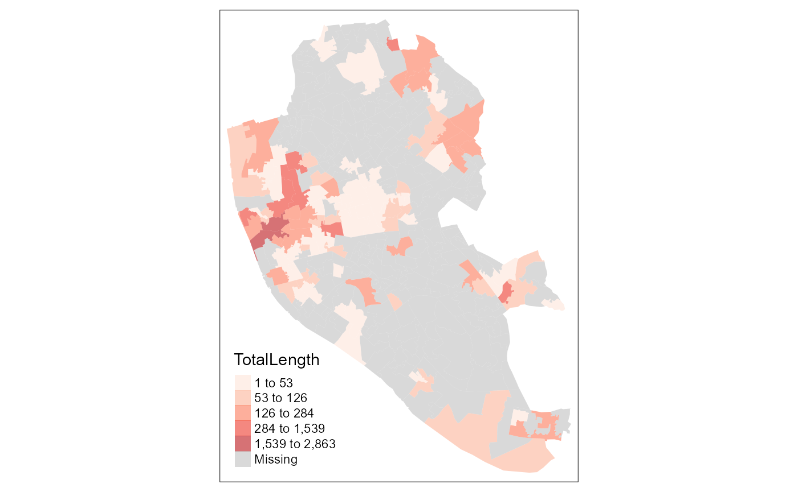

Example_cities.RmdThis notebook demonstrates the use of extRatum package drawing on OpenStreetMap data. extRatum provides summary statistics of local geospatial features within a given geographic area. It does so by calculating the area covered by a target geospatial feature (i.e. buildings, parks, lakes, etc.). The geospatial features can be of any geospatial data type, including point, polygon or line data.
In this example, we focus on built environment characteristics.
We make use of OpenStreetMap data and calculate point-, polygon- and line-based data features. The reference layer is the Lower Layer Super Output Area (LSOA) boundaries for the city of Liverpool in the United Kingdom.
## Warning: package 'sf' was built under R version 4.0.3## Linking to GEOS 3.8.0, GDAL 3.0.4, PROJ 6.3.1##
## Attaching package: 'dplyr'## The following objects are masked from 'package:stats':
##
## filter, lag## The following objects are masked from 'package:base':
##
## intersect, setdiff, setequal, union## Data (c) OpenStreetMap contributors, ODbL 1.0. https://www.openstreetmap.org/copyrightFirst, we read in the LSOA boundaries for Liverpool. The data downloaded from CDRC website: https://data.cdrc.ac.uk/
# 1. Read in the FUA grids
LSOAs <- st_read("layers/E08000012.shp")## Reading layer `E08000012' from data source `C:\Users\User\Desktop\extRatum\vignettes\layers\E08000012.shp' using driver `ESRI Shapefile'
## Simple feature collection with 298 features and 1 field
## geometry type: MULTIPOLYGON
## dimension: XY
## bbox: xmin: 333086.1 ymin: 381426.3 xmax: 345636 ymax: 397980.1
## projected CRS: Transverse_MercatorBecause the area of interest is in the UK, we select the British National Grid as a planar coordinate system of reference.
BNG = "epsg:27700"Here, we illustrate the use of extRatum with point data.
We create a simple query to download point data representing shops in Liverpool.
q <- getbb("Liverpool") %>%
opq() %>%
add_osm_feature(key = "shop")
shops <- osmdata_sf(q)And plot them.
#tmap_mode("view") #use this code for creating an interactive map
tmap_mode("plot")## tmap mode set to plotting
# show the points and grids
tm_shape(LSOAs) +
tm_borders() +
tm_shape(shops$osm_points) +
tm_dots()
Then we calculate the number of points in each polygon using the point_calc() function. Note that we have to pass a planar coordinate system in all our functions. Here we are using the British National Grid. The output of this function will be a dataframe containing:
Note that we have used the argument total_points = TRUE which returns the total number of points without differentiating between different shop types.
Shops_total <- point_calc(
point_data = shops$osm_points,
higher_geo_lay = LSOAs,
unique_id_code = 'lsoa11cd',
crs = BNG,
total_points = TRUE
)
# inspect the results
head(Shops_total)## # A tibble: 6 x 4
## lsoa11cd TotalArea NoPoints Ratio
## <chr> <dbl> <int> <dbl>
## 1 E01006513 555037. 29 0.0000522
## 2 E01006514 262031. 2 0.00000763
## 3 E01006515 366500. 16 0.0000437
## 4 E01006518 235181. 1 0.00000425
## 5 E01006520 259435. 1 0.00000385
## 6 E01006522 473782. 3 0.00000633In some cases, we want to know the split between different types of points. To that end, we can change the total_points = FALSE and specify the column name that includes the classification (see class_col).
Shops_class <- point_calc(
point_data = shops$osm_points,
higher_geo_lay = LSOAs,
unique_id_code = 'lsoa11cd',
class_col = 'shop',
crs = BNG,
total_points = FALSE
)The output of this function will be a list of three dataframes.
head(Shops_class$PointsLong)## # A tibble: 6 x 5
## lsoa11cd TotalArea shop NoPoints Ratio
## <chr> <dbl> <chr> <int> <dbl>
## 1 E01006513 555037. bakery 2 0.00000360
## 2 E01006513 555037. beauty 1 0.00000180
## 3 E01006513 555037. bookmaker 2 0.00000360
## 4 E01006513 555037. books 2 0.00000360
## 5 E01006513 555037. clothes 1 0.00000180
## 6 E01006513 555037. convenience 8 0.0000144
head(Shops_class$PointsCountWide)## # A tibble: 6 x 92
## lsoa11cd alcohol Baby baby_goods bag bakery beauty bed beverages bicycle
## <chr> <int> <int> <int> <int> <int> <int> <int> <int> <int>
## 1 E010065~ NA NA NA NA 2 1 NA NA NA
## 2 E010065~ NA NA NA NA NA NA NA NA NA
## 3 E010065~ NA NA NA NA NA NA NA NA 1
## 4 E010065~ NA NA NA NA NA NA NA NA NA
## 5 E010065~ NA NA NA NA NA NA NA NA NA
## 6 E010065~ NA NA NA NA NA NA NA NA NA
## # ... with 82 more variables: bookmaker <int>, books <int>, `Business
## # Service` <int>, butcher <int>, cakes <int>, car <int>, car_parts <int>,
## # car_repair <int>, carpet <int>, catalogue <int>, charity <int>,
## # chemist <int>, clothes <int>, coffee <int>, computer <int>,
## # confectionery <int>, convenience <int>, cosmetics <int>, craft <int>,
## # deli <int>, department_store <int>, Discount <int>, doityourself <int>,
## # dry_cleaning <int>, electrical <int>, electronics <int>, erotic <int>,
## # estate_agent <int>, florist <int>, food <int>, frozen_food <int>,
## # funeral_directors <int>, furniture <int>, games <int>, garden_centre <int>,
## # gift <int>, greeting_card <int>, `greetings cards` <int>,
## # hairdresser <int>, hardware <int>, health_food <int>, hifi <int>,
## # houseware <int>, jewelry <int>, kiosk <int>, laundry <int>, leather <int>,
## # mall <int>, mobile_phone <int>, music <int>, musical_instrument <int>,
## # newsagent <int>, optician <int>, outdoor <int>, pawnbroker <int>,
## # perfumery <int>, pet <int>, photo <int>, religion <int>, salon <int>,
## # second_hand <int>, shoes <int>, sports <int>, stationery <int>,
## # storage_rental <int>, supermarket <int>, tailor <int>, tea <int>,
## # ticket <int>, `ticket;convenience` <int>, toys <int>, trade <int>,
## # travel_agency <int>, vacant <int>, variety_store <int>, video_games <int>,
## # Vintage_Boutique <int>, watches <int>, window_blind <int>, wine <int>,
## # yes <int>, `<NA>` <int>
head(Shops_class$PointsRatioWide)## # A tibble: 6 x 92
## lsoa11cd alcohol Baby baby_goods bag bakery beauty bed beverages
## <chr> <dbl> <dbl> <dbl> <dbl> <dbl> <dbl> <dbl> <dbl>
## 1 E010065~ NA NA NA NA 3.60e-6 1.80e-6 NA NA
## 2 E010065~ NA NA NA NA NA NA NA NA
## 3 E010065~ NA NA NA NA NA NA NA NA
## 4 E010065~ NA NA NA NA NA NA NA NA
## 5 E010065~ NA NA NA NA NA NA NA NA
## 6 E010065~ NA NA NA NA NA NA NA NA
## # ... with 83 more variables: bicycle <dbl>, bookmaker <dbl>, books <dbl>,
## # `Business Service` <dbl>, butcher <dbl>, cakes <dbl>, car <dbl>,
## # car_parts <dbl>, car_repair <dbl>, carpet <dbl>, catalogue <dbl>,
## # charity <dbl>, chemist <dbl>, clothes <dbl>, coffee <dbl>, computer <dbl>,
## # confectionery <dbl>, convenience <dbl>, cosmetics <dbl>, craft <dbl>,
## # deli <dbl>, department_store <dbl>, Discount <dbl>, doityourself <dbl>,
## # dry_cleaning <dbl>, electrical <dbl>, electronics <dbl>, erotic <dbl>,
## # estate_agent <dbl>, florist <dbl>, food <dbl>, frozen_food <dbl>,
## # funeral_directors <dbl>, furniture <dbl>, games <dbl>, garden_centre <dbl>,
## # gift <dbl>, greeting_card <dbl>, `greetings cards` <dbl>,
## # hairdresser <dbl>, hardware <dbl>, health_food <dbl>, hifi <dbl>,
## # houseware <dbl>, jewelry <dbl>, kiosk <dbl>, laundry <dbl>, leather <dbl>,
## # mall <dbl>, mobile_phone <dbl>, music <dbl>, musical_instrument <dbl>,
## # newsagent <dbl>, optician <dbl>, outdoor <dbl>, pawnbroker <dbl>,
## # perfumery <dbl>, pet <dbl>, photo <dbl>, religion <dbl>, salon <dbl>,
## # second_hand <dbl>, shoes <dbl>, sports <dbl>, stationery <dbl>,
## # storage_rental <dbl>, supermarket <dbl>, tailor <dbl>, tea <dbl>,
## # ticket <dbl>, `ticket;convenience` <dbl>, toys <dbl>, trade <dbl>,
## # travel_agency <dbl>, vacant <dbl>, variety_store <dbl>, video_games <dbl>,
## # Vintage_Boutique <dbl>, watches <dbl>, window_blind <dbl>, wine <dbl>,
## # yes <dbl>, `<NA>` <dbl>Finally we can map the results to show the density of shops in the city of Liverpool at the LSOA level.
# attach the information calculate using extRatum to the LSOA boundaries
Liv_shops_geo <- dplyr::left_join(LSOAs, Shops_total, by = "lsoa11cd")
tm_shape(Liv_shops_geo) +
tm_fill("NoPoints", style = "fisher", palette = "Reds", alpha = 0.6)
Next, we illustrate the use of extRatum with polygon data.
We create a query to download building footprints for the city of Liverpool using OpenStreetMap data.
q2 <- getbb("Liverpool", limit = 100) %>%
opq() %>%
add_osm_feature(key = "building")
buildings <- osmdata_sf(q2)We can then subset the buildings that are classified as retail.
retail_buildings <- subset(buildings$osm_polygons, building=="retail")Then, we run the function that calculates the area in sqm covered by retail buildings in each LSOA using areal_calc() function.
Liv_retail <- areal_calc(
polygon_layer = retail_buildings,
higher_geo_lay = LSOAs,
unique_id_code = 'lsoa11cd',
crs = BNG
)The output of this function will be a dataframe containing:
Given that everything is measured in sqm, the ratio represents what is the % of area covered by retail buildings by sqm. In this way, we have a relative measure that can be compared across all LSOAs and is independent of their size.
We can also transform the calculated values in sqkm by dividing the value in sqm by 1,000,000. This can be done as follows.
Liv_retail$AreaCovered_sqkm <- Liv_retail$AreaCovered /1000000
head(Liv_retail)## # A tibble: 6 x 5
## lsoa11cd TotalArea AreaCovered Ratio AreaCovered_sqkm
## <chr> <dbl> <dbl> <dbl> <dbl>
## 1 E01006519 505501. 946. 0.00187 0.000946
## 2 E01006537 1077345. 5864. 0.00544 0.00586
## 3 E01006563 287328. 1455. 0.00506 0.00145
## 4 E01006570 443140. 7.59 0.0000171 0.00000759
## 5 E01006571 404631. 830. 0.00205 0.000830
## 6 E01006572 135551. 110. 0.000813 0.000110Finally, we can plot the results, showing the total area covered by retail buildings in each LSOA in Liverpool. Note that OSM data on retail buildings are not complete for the city of Liverpool. Thus, we see too many LSOAs with missing data.
Liv_retail_geo <- dplyr::left_join(LSOAs, Liv_retail, by = "lsoa11cd")
tm_shape(Liv_retail_geo) +
tm_fill("AreaCovered", style = "fisher", palette = "Reds", alpha = 0.6) 
Now, we illustrate the use of extRatum with line data.
We create a query to download highway lines for the city of Liverpool using OpenStreetMap data.
q3 <- getbb("Liverpool") %>%
opq() %>%
add_osm_feature(key = "highway")
highways <- osmdata_sf(q3)We can then create subsets of the dataset such as pathways for pedestrian use.
pedestrian <- subset(highways$osm_lines, highway == "pedestrian")Then we can calculate the total length of pedestrian pathways routes by LSOA using line_calc() function.
Liv_footways <- line_calc(
line_layer = pedestrian,
higher_geo_lay = LSOAs,
unique_id_code = 'lsoa11cd',
crs = BNG
)The output of this function will be a dataframe containing:
head(Liv_footways)## # A tibble: 6 x 4
## lsoa11cd TotalArea TotalLength Ratio
## <chr> <dbl> <dbl> <dbl>
## 1 E01006512 283907. 22.7 0.0000799
## 2 E01006513 555037. 208. 0.000375
## 3 E01006514 262031. 9.73 0.0000371
## 4 E01006515 366500. 38.3 0.000104
## 5 E01006518 235181. 29.5 0.000125
## 6 E01006521 603082. 29.2 0.0000484Finally, we can plot the results, showing the total length of pedestrian pathways in each LSOA in Liverpool. Note that the majority is around Liverpool city centre where we see darker colours.
Liv_footways_geo <- left_join(LSOAs, Liv_footways, by = "lsoa11cd")
tm_shape(Liv_footways_geo) +
tm_fill("TotalLength", style = "fisher", palette = "Reds", alpha = 0.6)